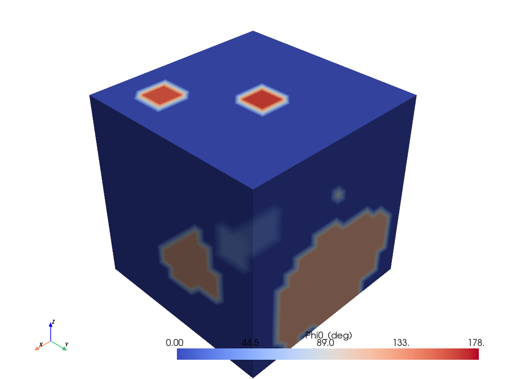

Note
Go to the end to download the full example code.
3D Microstructure analysis (BETA)#
Warning
Beta Features Disclaimer
This is beta documentation for one or more beta software features.
Beta features are considered unreleased and have not been fully tested nor fully validated. The results are not guaranteed by Ansys, Inc. (Ansys) to be correct. You assume the risk of using beta features.
At its discretion, Ansys may release, change, or withdraw beta features in future revisions.
Beta features are not subject to the Ansys Class 3 error reporting system. Ansys makes no commitment to resolve defects reported against beta features; however, your feedback will help us improve the quality of the product.
Ansys does not guarantee that database and/or input files used with beta features will run successfully from version to version of the software, nor with the final released version of the features. You may need to modify the database and/or input files before running them on other versions.
Documentation for beta features is called beta documentation, and it may not be written to the same standard as documentation for released features. Beta documentation may not be complete at the time of product release. At its discretion, Ansys may add, change, or delete beta documentation at any time.
This example shows how to use PyAdditive to determine the three-dimensional microstructure for a sample coupon with given material and machine parameters.
Units are SI (m, kg, s, K) unless otherwise noted.
Perform required import and connect#
Perform the required import and connect to the Additive service.
import pyvista as pv
from ansys.additive.core import (
Additive,
AdditiveMachine,
Microstructure3DInput,
SimulationError,
)
# Beta features must be enabled to use the 3D microstructure simulation.
additive = Additive(enable_beta_features=True)
Select material#
Select a material. You can use the materials_list() method to
obtain a list of available materials.
print("Available material names: {}".format(additive.materials_list()))
Available material names: ['IN718', '17-4PH', 'Al357', 'Ti64', 'CoCr', '316L', 'IN625', 'AlSi10Mg']
You can obtain the parameters for a single material by passing a name
from the materials list to the material() method.
material = additive.material("IN625")
Specify machine parameters#
Specify machine parameters by first creating an AdditiveMachine object
and then assigning the desired values. All values are in SI units (m, kg, s, K)
unless otherwise noted.
machine = AdditiveMachine()
# Show available parameters
print(machine)
AdditiveMachine
laser_power: 195 W
scan_speed: 1.0 m/s
heater_temperature: 80 °C
layer_thickness: 5e-05 m
beam_diameter: 0.0001 m
starting_layer_angle: 57 °
layer_rotation_angle: 67 °
hatch_spacing: 0.0001 m
slicing_stripe_width: 0.01 m
Set laser power and scan speed#
Set the laser power and scan speed.
machine.scan_speed = 1 # m/s
machine.laser_power = 500 # W
Specify inputs for 3D microstructure simulation#
Specify microstructure inputs.
input = Microstructure3DInput(
machine=machine,
material=material,
sample_size_x=0.0001, # in meters (.1 mm)
sample_size_y=0.0001,
sample_size_z=0.0001,
)
Run simulation#
Use the simulate() method of the additive object to run the simulation.
The returned object is either a Microstructure3DSummary object or a
SimulationError object.
summary = additive.simulate(input)
if isinstance(summary, SimulationError):
raise Exception(summary.message)
Plot 3D grain visualization#
The summary object includes a VTK file describing the 3D grain structure.
The VTK file contains scalar data sets GrainNumber, Phi0_(deg),
Phi1_(deg), Phi2_(deg), and Temperatures.
# Plot the Phi0 data of the 3D grain structure
cmap = "coolwarm"
ms3d = pv.read(summary.grain_3d_vtk)
ms3d.plot(scalars="Phi0_(deg)", cmap=cmap)
# Add a cut plane to the plot
plotter = pv.Plotter()
plotter.add_mesh_clip_plane(ms3d, scalars="Phi0_(deg)", cmap=cmap)
plotter.show()
- 

Print average grain sizes#
The summary object includes the average grain sizes in the XY, XZ, and YZ
planes.
print("Average grain size in XY plane: {} µm".format(summary.xy_average_grain_size))
print("Average grain size in XZ plane: {} µm".format(summary.xz_average_grain_size))
print("Average grain size in YZ plane: {} µm".format(summary.yz_average_grain_size))
Average grain size in XY plane: 77.18740970766365 µm
Average grain size in XZ plane: 77.2075615253535 µm
Average grain size in YZ plane: 61.56124719801804 µm
Print the simulation logs#
To print the simulation logs, use the logs() property.
print(summary.logs)
Total running time of the script: (0 minutes 15.311 seconds)